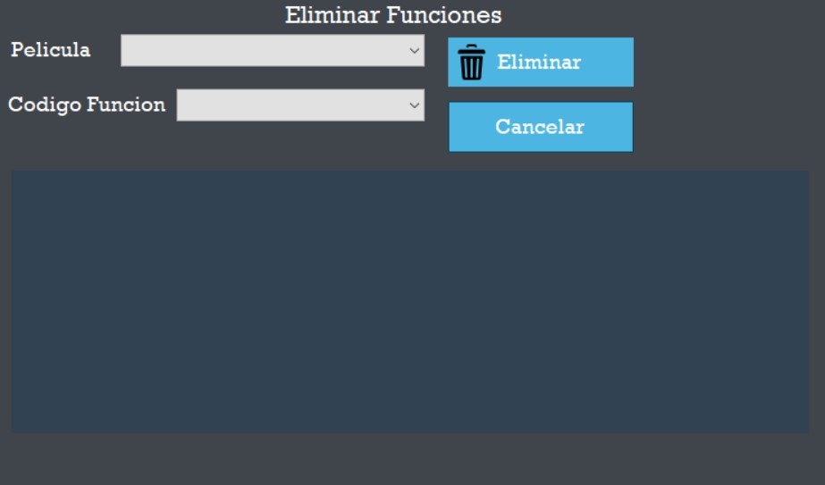

Nota: todos los botones de Cancelar, sirven para limpiar todos los campos en el caso de que ya no se desee, Ingresar, Modificar o eliminar una funcion.
Para ingresar una funcion debera seguir los siguientes pasos (Nota: la mayoria de campos son dependientes de otro, asi que para que muestren datos, se debio haber seleccionado otro campo antes.):
1. Seleccionar un Departamento, para poder ver los municipios en los que hay cines disponibles.
2. Seleccionar un Municipio, al seleccionarlo se habilidataran los cines disponibles.
3. Seleccionar un Cine, al seleccionarlo se habilidataran las salas disponibles que tiene dicho cine.
4. Seleccionar una sala, al cual se le asiganara la funcion.
5. Selecionar una de las peliculas disponibles, que se le mostraran.
6. Selecionar el idioma
7. Selecionar el Formato de la pelicula
8. Selecionar la fecha e ingresaar la hora en el cual sera proyectado la funcion.
Al tener todos los campos llenos debera presionar el boton Ingresar para que la funcion quede registrada.
Al presionar el boton de modificar se le mostrara la siguiente ventana, en el cual podra modificar las funciones que estan almacenadas.

Al presionar el boton de Eliminar se le mostrara la siguiente ventana, en el cual podra Eliminar las funciones que estan almacenadas.
